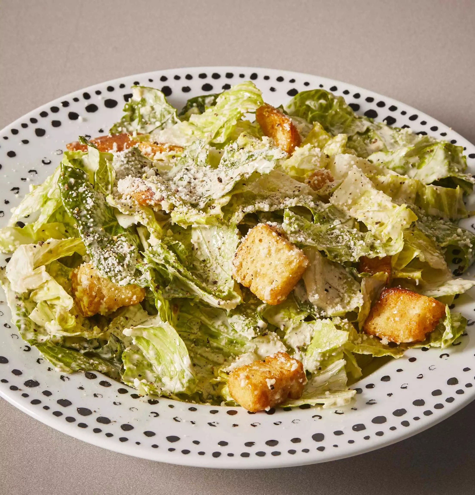

Caesar Salad

This Caesar salad recipe has no relation to the sad
version you were served at a wedding in the ’90s.
A great Caesar has swagger: The romaine lettuce should be cold and crunchy,
the dressing creamy and briny, and the croutons craggy and freshly made.
Ingredients:
DRESSING:
- 6 anchovy fillets packed in oil, drained
- 1 small garlic clove
- Kosher salt
- 2 large egg yolks
- 2 tablespoons fresh lemon juice, plus more
- ¾ teaspoon Dijon mustard
- 2 tablespoons olive oil
- ½ cup vegetable oil
- 3 tablespoons finely grated Parmesan
- Freshly ground black pepper
CROUTONS:
- 3 cups torn 1" pieces country bread, with crusts
- 3 tablespoons olive oil
ASSEMBLY:
- 3 romaine hearts, leaves separated
- Parmesan, for serving
Preparation Method:
- DRESSING: Chop together anchovy fillets, garlic, and pinch of salt. Use the side of a knife blade to mash into a paste, then scrape into a medium bowl. Whisk in egg yolks, 2 Tbsp. lemon juice, and mustard. Adding drop by drop to start, gradually whisk in olive oil, then vegetable oil; whisk until dressing is thick and glossy. Whisk in Parmesan. Season with salt, pepper, and more lemon juice, if desired.
- CROUTONS: Preheat oven to 375°. Toss bread with olive oil on a baking sheet; season with salt and pepper. Bake, tossing occasionally, until golden, 10–15 minutes.
- ASSEMBLY: Place whole romaine leaves (for the ideal mix of crispness, surface area, and structure) in a large bowl. Use a vegetable peeler to thinly shave a modest amount of Parmesan (a mound of grated Parmesan may look impressive, but all that clumpy cheese mutes the dressing). Use your hands to gently toss together the lettuce, croutons, and dressing. Top with the shaved Parm.
- Enjoy!!!